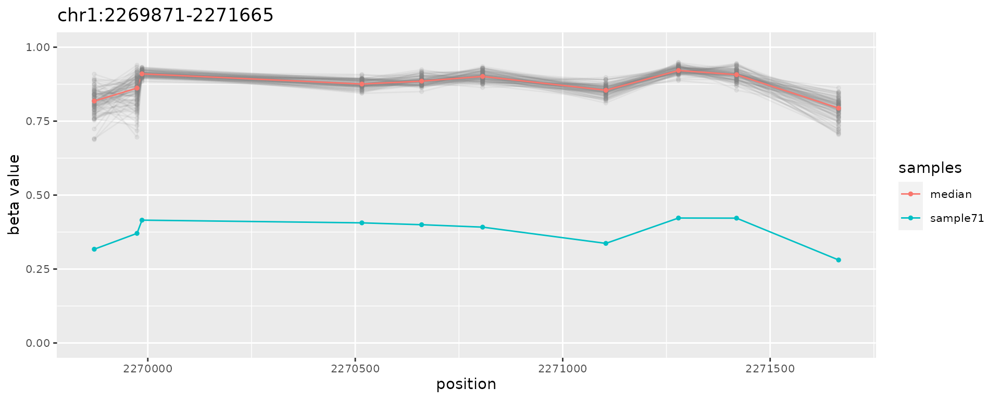
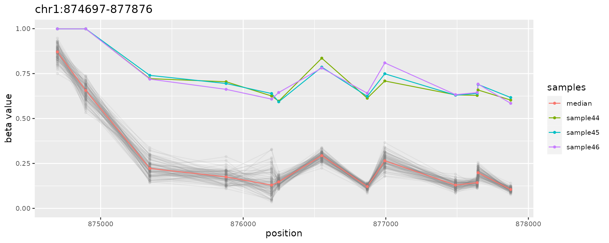
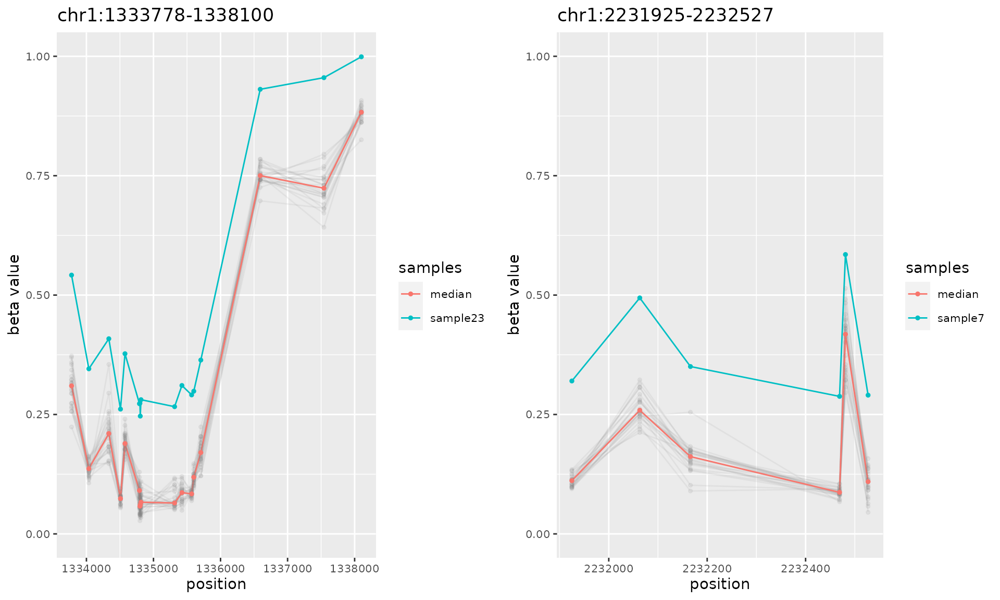

Abstract
A comprehensive guide to using the ramr package for detection of rare aberrantly methylated regions
ramr is an R package for detection of low-frequency aberrant methylation events in large datasets obtained by methylation profiling using array or high-throughput bisulfite sequencing. In addition, package provides functions to visualize found aberrantly methylated regions (AMRs), and to generate sets of all possible regions to be used as reference sets for enrichment analysis.
ramr methods operate on objects of the class GRanges. The input object for AMR search must in addition contain metadata columns with sample beta values. A typical input object looks like this:
GRanges object with 383788 ranges and 845 metadata columns:
seqnames ranges strand | GSM1235534 GSM1235535 GSM1235536 ...
<Rle> <IRanges> <Rle> | <numeric> <numeric> <numeric> ...
cg13869341 chr1 15865 * | 0.801634776091808 0.846486905008704 0.86732154737116 ...
cg24669183 chr1 534242 * | 0.834138820071765 0.861974610731835 0.832557979806823 ...
cg15560884 chr1 710097 * | 0.711275180750356 0.70461945838556 0.699487225634589 ...
cg01014490 chr1 714177 * | 0.0769098196182058 0.0569443780518647 0.0623154673389864 ...
cg17505339 chr1 720865 * | 0.876413362222415 0.885593263385521 0.877944732153869 ...
... ... ... ... . ... ... ... ...
cg05615487 chr22 51176407 * | 0.84904178467798 0.836538383875097 0.81568519870099 ...
cg22122449 chr22 51176711 * | 0.882444486059592 0.870804215405886 0.859269224277308 ...
cg08423507 chr22 51177982 * | 0.886406345093286 0.882430879852752 0.887241923657461 ...
cg19565306 chr22 51222011 * | 0.0719084295670266 0.0845209871264646 0.0689074604483659 ...
cg09226288 chr22 51225561 * | 0.724145303755024 0.696281176451351 0.711459675603635 ...
ramr package is supplied with a sample data, which was simulated using GSE51032 dataset as described in the ramr reference paper. Sample dataset ramr.data contains beta values for 10000 CpGs and 100 samples (ramr.samples), and carries 6 unique (ramr.tp.unique) and 15 non-unique (ramr.tp.nonunique) true positive AMRs containing at least 10 CpGs with their beta values increased/decreased by 0.5
library(ramr)
#> Loading required package: GenomicRanges
#> Loading required package: stats4
#> Loading required package: BiocGenerics
#> Loading required package: parallel
#>
#> Attaching package: 'BiocGenerics'
#> The following objects are masked from 'package:parallel':
#>
#> clusterApply, clusterApplyLB, clusterCall, clusterEvalQ, clusterExport, clusterMap,
#> parApply, parCapply, parLapply, parLapplyLB, parRapply, parSapply, parSapplyLB
#> The following objects are masked from 'package:stats':
#>
#> IQR, mad, sd, var, xtabs
#> The following objects are masked from 'package:base':
#>
#> anyDuplicated, append, as.data.frame, basename, cbind, colnames, dirname, do.call,
#> duplicated, eval, evalq, Filter, Find, get, grep, grepl, intersect, is.unsorted,
#> lapply, Map, mapply, match, mget, order, paste, pmax, pmax.int, pmin, pmin.int,
#> Position, rank, rbind, Reduce, rownames, sapply, setdiff, sort, table, tapply, union,
#> unique, unsplit, which.max, which.min
#> Loading required package: S4Vectors
#>
#> Attaching package: 'S4Vectors'
#> The following objects are masked from 'package:base':
#>
#> expand.grid, I, unname
#> Loading required package: IRanges
#> Loading required package: GenomeInfoDb
#> Loading required package: doParallel
#> Loading required package: foreach
#> Loading required package: iterators
#> Loading required package: matrixStats
data(ramr)
head(ramr.samples)
#> [1] "sample1" "sample2" "sample3" "sample4" "sample5" "sample6"
ramr.data[1:10,ramr.samples[1:3]]
#> GRanges object with 10 ranges and 3 metadata columns:
#> seqnames ranges strand | sample1 sample2 sample3
#> <Rle> <IRanges> <Rle> | <numeric> <numeric> <numeric>
#> cg13869341 chr1 15865 * | 0.833609 0.847747 0.879959
#> cg14008030 chr1 18827 * | 0.553312 0.547931 0.609759
#> cg12045430 chr1 29407 * | 0.186572 0.204322 0.222865
#> cg20826792 chr1 29425 * | 0.481280 0.439688 0.426783
#> cg00381604 chr1 29435 * | 0.134126 0.173629 0.167011
#> cg20253340 chr1 68849 * | 0.500267 0.615868 0.541587
#> cg21870274 chr1 69591 * | 0.777613 0.771680 0.775057
#> cg03130891 chr1 91550 * | 0.245783 0.204307 0.223610
#> cg24335620 chr1 135252 * | 0.777796 0.790842 0.786113
#> cg16162899 chr1 449076 * | 0.878150 0.860134 0.898071
#> -------
#> seqinfo: 24 sequences from hg19 genome; no seqlengths
plotAMR(ramr.data, ramr.samples, ramr.tp.unique[1])
#> [[1]]

The input object may be obtained using data from various sources. Here we provide two examples:
The following code pulls (NB: very large) raw files from NCBI GEO database, performes normalization and creates GRanges object for further analysis using ramr (system requirements: 22GB of disk space, 64GB of RAM)
library(minfi)
library(GEOquery)
library(GenomicRanges)
library(IlluminaHumanMethylation450kanno.ilmn12.hg19)
# destination for temporary files
dest.dir <- tempdir()
# downloading and unpacking raw IDAT files
suppl.files <- getGEOSuppFiles("GSE51032", baseDir=dest.dir, makeDirectory=FALSE, filter_regex="RAW")
untar(rownames(suppl.files), exdir=dest.dir, verbose=TRUE)
idat.files <- list.files(dest.dir, pattern="idat.gz$", full.names=TRUE)
sapply(idat.files, gunzip, overwrite=TRUE)
# reading IDAT files
geo.idat <- read.metharray.exp(dest.dir)
colnames(geo.idat) <- gsub("(GSM\\d+).*", "\\1", colnames(geo.idat))
# processing raw data
genomic.ratio.set <- preprocessQuantile(geo.idat, mergeManifest=TRUE, fixOutliers=TRUE)
# creating the GRanges object with beta values
data.ranges <- granges(genomic.ratio.set)
data.betas <- getBeta(genomic.ratio.set)
sample.ids <- colnames(geo.idat)
mcols(data.ranges) <- data.betas
# data.ranges and sample.ids objects are now ready for AMR search using ramrThis code shows how to do basic analysis with ramr using provided data files:
# identify AMRs
amrs <- getAMR(ramr.data, ramr.samples, ramr.method="beta", min.cpgs=5,
merge.window=1000, qval.cutoff=1e-3, cores=2)
# inspect
sort(amrs)
#> GRanges object with 22 ranges and 5 metadata columns:
#> seqnames ranges strand | revmap ncpg sample dbeta
#> <Rle> <IRanges> <Rle> | <list> <integer> <character> <numeric>
#> [1] chr1 566172-569687 * | 17,18,19,... 15 sample95 0.498337
#> [2] chr1 874697-877876 * | 165,166,167,... 13 sample44 0.451475
#> [3] chr1 874697-877876 * | 165,166,167,... 13 sample45 0.457115
#> [4] chr1 874697-877876 * | 165,166,167,... 13 sample46 0.458498
#> [5] chr1 1095607-1106175 * | 620,621,622,... 49 sample66 -0.503085
#> ... ... ... ... . ... ... ... ...
#> [18] chr1 2200890-2203648 * | 2263,2264,2265,... 10 sample58 -0.505059
#> [19] chr1 2200890-2203648 * | 2263,2264,2265,... 10 sample59 -0.498849
#> [20] chr1 2200890-2203648 * | 2263,2264,2265,... 10 sample60 -0.500389
#> [21] chr1 2269871-2271665 * | 2410,2411,2412,... 10 sample71 -0.496600
#> [22] chr1 2443577-2453006 * | 2722,2723,2724,... 30 sample25 -0.484617
#> pval
#> <numeric>
#> [1] 4.60616e-171
#> [2] 1.30458e-07
#> [3] 1.04111e-07
#> [4] 8.03068e-08
#> [5] 1.92980e-17
#> ... ...
#> [18] 2.98503e-08
#> [19] 4.05494e-08
#> [20] 3.68870e-08
#> [21] 1.54741e-17
#> [22] 1.26772e-19
#> -------
#> seqinfo: 24 sequences from hg19 genome; no seqlengths
library(gridExtra)
#>
#> Attaching package: 'gridExtra'
#> The following object is masked from 'package:BiocGenerics':
#>
#> combine
do.call("grid.arrange", c(plotAMR(ramr.data, ramr.samples, amrs[1:10]), ncol=2))
If necessary, AMRs can be annotated to known genomic elements using R library annotatr 1 or tested for potential enrichment in epigenetic or other marks using R library LOLA 2
# annotating AMRs using R library annotatr
library(annotatr)
#> Warning: replacing previous import 'AnnotationHub::hubUrl' by 'rtracklayer::hubUrl' when loading
#> 'annotatr'
annotation.types <- c("hg19_cpg_inter", "hg19_cpg_islands", "hg19_cpg_shores",
"hg19_cpg_shelves", "hg19_genes_intergenic", "hg19_genes_promoters",
"hg19_genes_5UTRs", "hg19_genes_firstexons", "hg19_genes_3UTRs")
annotations <- build_annotations(genome='hg19', annotations=annotation.types)
#> Loading required package: GenomicFeatures
#> Loading required package: AnnotationDbi
#> Loading required package: Biobase
#> Welcome to Bioconductor
#>
#> Vignettes contain introductory material; view with 'browseVignettes()'. To cite
#> Bioconductor, see 'citation("Biobase")', and for packages 'citation("pkgname")'.
#>
#> Attaching package: 'Biobase'
#> The following objects are masked from 'package:matrixStats':
#>
#> anyMissing, rowMedians
#>
#> 'select()' returned 1:1 mapping between keys and columns
#> Building promoters...
#> Building 1to5kb upstream of TSS...
#> Building intergenic...
#> Building 5UTRs...
#> Building 3UTRs...
#> Building exons...
#> Building first exons...
#> Building introns...
#> snapshotDate(): 2021-05-18
#> Building CpG islands...
#> loading from cache
#> Building CpG shores...
#> Building CpG shelves...
#> Building inter-CpG-islands...
amrs.annots <- annotate_regions(regions=amrs, annotations=annotations, ignore.strand=TRUE, quiet=FALSE)
#> Annotating...
summarize_annotations(annotated_regions=amrs.annots, quiet=FALSE)
#> Warning: `distinct_()` was deprecated in dplyr 0.7.0.
#> Please use `distinct()` instead.
#> See vignette('programming') for more help
#> Counting annotation types
#> Warning: `group_by_()` was deprecated in dplyr 0.7.0.
#> Please use `group_by()` instead.
#> See vignette('programming') for more help
#> # A tibble: 9 x 2
#> annot.type n
#> <chr> <int>
#> 1 hg19_cpg_inter 4
#> 2 hg19_cpg_islands 10
#> 3 hg19_cpg_shelves 4
#> 4 hg19_cpg_shores 10
#> 5 hg19_genes_3UTRs 2
#> 6 hg19_genes_5UTRs 5
#> 7 hg19_genes_firstexons 8
#> 8 hg19_genes_intergenic 1
#> 9 hg19_genes_promoters 8# generate the set of all possible genomic regions using sample dataset and
# the same parameters as for AMR search
universe <- getUniverse(ramr.data, min.cpgs=5, merge.window=1000)
# enrichment analysis of AMRs using R library LOLA
library(LOLA)
# prepare the core database as described in vignettes
vignette("usingLOLACore")
# load the core database and perform the enrichment analysis
hg19.coredb <- loadRegionDB(system.file("LOLACore", "hg19", package="LOLA"))
runLOLA(amrs, universe, hg19.coredb, cores=1, redefineUserSets=TRUE)ramr packageramr manuscriptReplication Data for: “ramr: an R package for detection of rare aberrantly methylated regions”
sessionInfo()
#> R Under development (unstable) (2021-04-15 r80175)
#> Platform: x86_64-pc-linux-gnu (64-bit)
#> Running under: Ubuntu 20.04.2 LTS
#>
#> Matrix products: default
#> BLAS/LAPACK: /usr/lib/x86_64-linux-gnu/openblas-pthread/libopenblasp-r0.3.8.so
#>
#> locale:
#> [1] LC_CTYPE=en_US.UTF-8 LC_NUMERIC=C LC_TIME=en_US.UTF-8
#> [4] LC_COLLATE=en_US.UTF-8 LC_MONETARY=en_US.UTF-8 LC_MESSAGES=C
#> [7] LC_PAPER=en_US.UTF-8 LC_NAME=C LC_ADDRESS=C
#> [10] LC_TELEPHONE=C LC_MEASUREMENT=en_US.UTF-8 LC_IDENTIFICATION=C
#>
#> attached base packages:
#> [1] parallel stats4 stats graphics grDevices utils datasets methods base
#>
#> other attached packages:
#> [1] org.Hs.eg.db_3.13.0 TxDb.Hsapiens.UCSC.hg19.knownGene_3.2.2
#> [3] GenomicFeatures_1.44.0 AnnotationDbi_1.54.0
#> [5] Biobase_2.52.0 annotatr_1.18.0
#> [7] gridExtra_2.3 ramr_1.1.0
#> [9] matrixStats_0.58.0 doParallel_1.0.16
#> [11] iterators_1.0.13 foreach_1.5.1
#> [13] GenomicRanges_1.44.0 GenomeInfoDb_1.28.0
#> [15] IRanges_2.26.0 S4Vectors_0.30.0
#> [17] BiocGenerics_0.38.0
#>
#> loaded via a namespace (and not attached):
#> [1] colorspace_2.0-1 rjson_0.2.20 ellipsis_0.3.2
#> [4] EnvStats_2.4.0 rprojroot_2.0.2 XVector_0.32.0
#> [7] fs_1.5.0 rstudioapi_0.13 farver_2.1.0
#> [10] bit64_4.0.5 interactiveDisplayBase_1.30.0 fansi_0.4.2
#> [13] codetools_0.2-18 cachem_1.0.5 knitr_1.33
#> [16] jsonlite_1.7.2 Rsamtools_2.8.0 dbplyr_2.1.1
#> [19] png_0.1-7 shiny_1.6.0 readr_1.4.0
#> [22] BiocManager_1.30.15 compiler_4.1.0 httr_1.4.2
#> [25] assertthat_0.2.1 Matrix_1.3-3 fastmap_1.1.0
#> [28] cli_2.5.0 later_1.2.0 htmltools_0.5.1.1
#> [31] prettyunits_1.1.1 tools_4.1.0 gtable_0.3.0
#> [34] glue_1.4.2 GenomeInfoDbData_1.2.6 reshape2_1.4.4
#> [37] dplyr_1.0.6 rappdirs_0.3.3 Rcpp_1.0.6
#> [40] jquerylib_0.1.4 pkgdown_1.6.1.9001 vctrs_0.3.8
#> [43] Biostrings_2.60.0 rtracklayer_1.52.0 xfun_0.23
#> [46] stringr_1.4.0 ps_1.6.0 mime_0.10
#> [49] lifecycle_1.0.0 restfulr_0.0.13 XML_3.99-0.6
#> [52] AnnotationHub_3.0.0 zlibbioc_1.38.0 scales_1.1.1
#> [55] BSgenome_1.60.0 ragg_1.1.2 hms_1.1.0
#> [58] promises_1.2.0.1 MatrixGenerics_1.4.0 SummarizedExperiment_1.22.0
#> [61] yaml_2.2.1 curl_4.3.1 memoise_2.0.0
#> [64] ggplot2_3.3.3 sass_0.4.0 biomaRt_2.48.0
#> [67] stringi_1.6.2 RSQLite_2.2.7 BiocVersion_3.13.1
#> [70] highr_0.9 BiocIO_1.2.0 desc_1.3.0
#> [73] filelock_1.0.2 optimx_2020-4.2 BiocParallel_1.26.0
#> [76] rlang_0.4.11 pkgconfig_2.0.3 systemfonts_1.0.2
#> [79] bitops_1.0-7 lattice_0.20-44 evaluate_0.14
#> [82] purrr_0.3.4 GenomicAlignments_1.28.0 labeling_0.4.2
#> [85] bit_4.0.4 tidyselect_1.1.1 plyr_1.8.6
#> [88] magrittr_2.0.1 R6_2.5.0 generics_0.1.0
#> [91] DelayedArray_0.18.0 DBI_1.1.1 withr_2.4.2
#> [94] pillar_1.6.1 KEGGREST_1.32.0 RCurl_1.98-1.3
#> [97] tibble_3.1.2 crayon_1.4.1 utf8_1.2.1
#> [100] BiocFileCache_2.0.0 rmarkdown_2.8 progress_1.2.2
#> [103] ExtDist_0.6-4 grid_4.1.0 blob_1.2.1
#> [106] digest_0.6.27 xtable_1.8-4 regioneR_1.24.0
#> [109] httpuv_1.6.1 numDeriv_2016.8-1.1 textshaping_0.3.4
#> [112] munsell_0.5.0 bslib_0.2.5.1Raymond G Cavalcante, Maureen A Sartor, annotatr: genomic regions in context, Bioinformatics, Volume 33, Issue 15, 01 August 2017, Pages 2381–2383, https://doi.org/10.1093/bioinformatics/btx183↩︎
Nathan C. Sheffield, Christoph Bock, LOLA: enrichment analysis for genomic region sets and regulatory elements in R and Bioconductor, Bioinformatics, Volume 32, Issue 4, 15 February 2016, Pages 587–589, https://doi.org/10.1093/bioinformatics/btv612↩︎